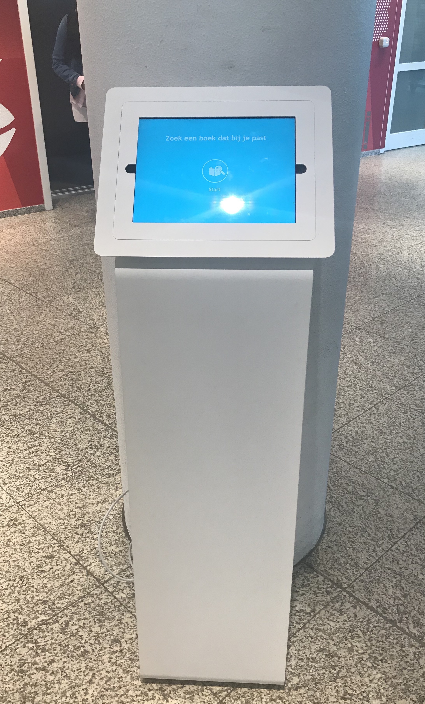
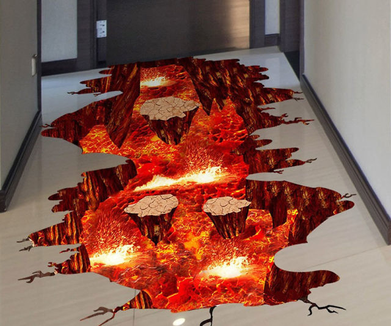

Met exertion games bedoeld men digitale games die gebruik maken van fysieke inspanninginteracties waarbij de fysieke inspanning een sleutel is voor het bereiken van het doel van het spel. De opdracht bij dit onderwerp is om een concept te bedenken waarbij de werknemers en studenten van de Haagse Hogeschool alleen door middel van extertion door het hoofgebouw kunnen lopen. Verder zullen er twee voorbeelden gegeven worden van exertion games om zo een beter beeld te krijgen van het onderwerp.
Bij elke ingang van de grote hal staat er een platform. Bij de platforms staat er een bord met daarop de volgende woorden: "THE FLOOR IS LAVA!! Think you could do it better than the others, well let’s see then. Connect your phone with the platform and start the challenge. See you on the other side." De bedoeling is om van A naar B te gaan zonder op de lava te stappen. Je neemt een van de weggetjes om naar de gewenste locatie te gaan. Bij het gebruiken van de trap heb je de keuze uit twee verschillende trappen, er zijn namelijk twee trappen die bedoeld zijn om naar boven te gaan en twee om naar beneden te gaan. Wanneer je bij de trap aankomt moet je heel goed uitkijken waar je gaat staan, want op sommige plekken valt de grond naar beneden en kan je in de lava terecht komen. Dit kan voor puntenaftrek zorgen. Wanneer je aankomt bij het einde, loop je langs de platform waar je vervolgens je behaalde punten kan zien en of je een highscore gehaald hebt of niet.
Wanneer je aankomt bij een platform, moet je als eerst je telefoon, door middel van bluetooth, ermee verbinden. Hierbij krijg je een pop up op je mobiel, waar je je naam in moet typen, zodat je op het einde je punten kan zien. Ook zal je locatie bijgehouden worden om te weten wanneer er op de lava gestapt wordt en er punten afgetrokken kunnen worden. De lava zal op de grond en de trappen geprojecteerd worden, waarbij de projectors ook verbonden zijn met de platforms. Wanneer je weer langs een andere platform gaat weet de platform dat en komt je naam erop met de score die je behaald hebt. De persoon met de hoogste scoren zal bovenaan zijn naam in het groot zien met daaronder de andere namen. Pas als er een hoger scoren behaald is, zal deze naam veranderen.
 Copy paste skate is een systeem die als doel heeft om de ervaring van skateboard-trucs te ondersteunen. Het drijft grenzen van de interactieve technologie die wordt gebruikt in de sport en gaat uit van welbekende terreinen van systemen voor prestatiegerichte sport en van op trucs gerichte sporten. Het systeem biedt skaters manieren om opnieuw hun tricks uit te voeren, direct nadat ze ze gedaan hebben. In plaats van de atleet cijfers aan te bieden over het scherm, wordt het hele schaats omgeving met een waarneembare informatie aan trucs. Het systeem richt zich op de de zintuigen die belangrijk zijn voor het schaatsen, dit zijn gehoor, zicht en aanraking. Copy paste skate bestaat uit drie hoofdcomponenten. Alle drie geven de skaters feedback over de trick die ze net hebben uitgevoerd. Ook wordt er een visualisatie van de bewegingspad van het bord tijdens de trick op ware grootte geprojecteerd op de omgeving. Verder wordt er een vertraagde audio-opnames van de poging afgespeeld en trilt ook nog eens de hele vloer in het ritme van de beweging van de schaatsers tijdens de trick pogingen.
Om de beweging te kunnen onderzoeken worden er kleine infraroodlampen op het bord vastgelegd door een aangepaste digitale camera. De camera maakt 2,5 seconden lange belichtingsfoto's. Deze foto’s tonen lichtpaden aan van de bewegingen van het bord gedurende die 2,5 seconden. Op maat gemaakte software neemt en bewerkt de foto’s onmiddellijk en stuurt ze naar projectoren. Verder is er ook een krachtige microfoon die tricks opvangt, waarna de software de audio op halve snelheid en met 1,5 keer het originele volume via een grote luidspreker weergeeft. De informatie over de beweging van de skateboard wordt afgeleid van het opgenomen geluid en verzonden naar een krachtige omzetter met lage frequentie. Deze omzetter produceert geen geluid, maar gebruikt zijn gewicht om elk oppervlak waarop het is gemonteerd te laten trillen.
http://exertiongameslab.org/projects/copy-paste-skateDe joggobot is een autonome vliegende robot die reageert op de acties van de jogger. Hij kan de positie van de jogger volgen door middel van een ingebouwde camera en detectiesoftware, Het idee achter de joggobot is dat het bedoeld is als metgezel bij fysieke activiteiten. Doordat zowel de robots als oefeningen sterk op het lichaam gericht zijn, zou het voor een boeiendere ervaring kunnen zorgen. Dit kan goed gezien worden wanneer het vergeleken wordt met de verschillende apps die joggers als ondersteuningen gebruiken. De app weet niets over het “lichaam” van de telefoon noch weet de telefoon iets van het “lichaam” en de oefeningen van de app. Daarom is de app niet erg body-focused of belichaamd. Joggen daarentegen gaat helemaal over het lichaam, net zoals de joggobot. Het is een fysieke apparaat dat reageert op zijn omgeving en de jogger. Zowel de jogger als de joggobot worden dus beïnvloed door omgevingsfactoren zoals wind of regen, allebei kunnen “moe” worden (snelheid van de joggobot neemt af) en bij allebei kan er gehoord worden of ze fysieke inspanning investeren. Doordat de joggers meer kunnen relateren met de joggobot, omdat het een lichaam heeft, biedt dat een aantrekkelijker ervaring. Er kan hierbij namelijk empathie ontwikkeld worden omdat ze beide een op het lichaam gerichte ervaring hebben. Dit is belangrijk omdat er uit sportonderzoek naar voren was gekomen dat de sociale factoren essentieel zijn als het gaat om bewegen.
De joggobot is er om competitie te creëren en de jogger te motiveren om langer door te gaan. Zo kan er een wedstrijd gehouden worden met de bot, om te kijken wie het joggen het langste vol zou houden. De joggobot werkt als volgt, de jogger krijgt een marker op zijn t-shirt, die door middel van een camera getraceerd worden. Hierdoor wordt er in de bot een software getriggerd die vervolgens laat weten waar de jogger zich bevindt. Op deze manier kan de bot in de buurt blijven en vliegt hij niet plotseling weg.
http://exertiongameslab.org/projects/joggobotIk vind het onderwerp exertion games erg interessant. Dit kwam doordat ik zelf niet zo hou van sporten en ik mezelf niet kan motiveren om het te gaan doen. Wel hou ik erg veel van games. Het combineren van deze twee leek me dan ook een heel leuk idee dat me erg aansprak en ik ben ervan overtuigd dat als dit op verschillende plekken toegepast zou worden het een positief resultaat zou hebben en ervoor zou zorgen dat mensen niet zo tegen het sporten aan zouden kijken. Ik had bij dit onderwerp eerst helemaal geen beeld van wat het was, omdat ik nooit wat gehoord heb over exertion games en ik niet precies wist wat het inhield. Na er wat meer over gehoord te hebben, ben ik een beeld gaan krijgen over wat het precies is. Het bleek uiteindelijk veel breder te zijn dan verwacht. Ik dacht eerst dat verschillende sporten aangepast worden dat het meer een game zou worden, een beetje zoals de wii, maar dit bleek niet helemaal waar te zijn. Het kan namelijk overal op verschillende manieren toegepast worden. Een voorbeeld is de joggobot. Het is een heel ander concept dan dat van de wii.